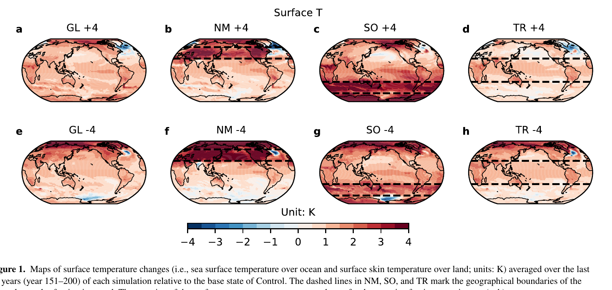
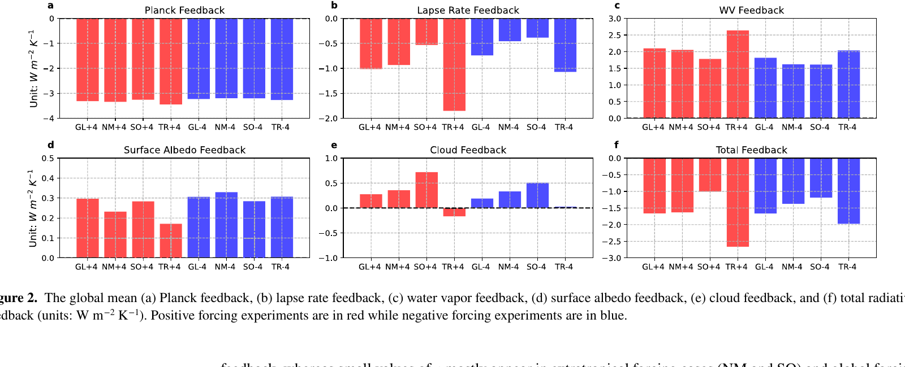
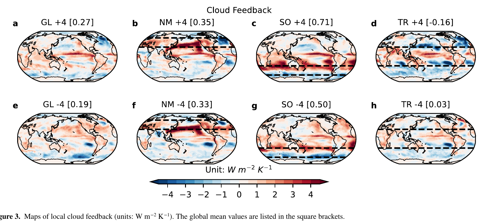
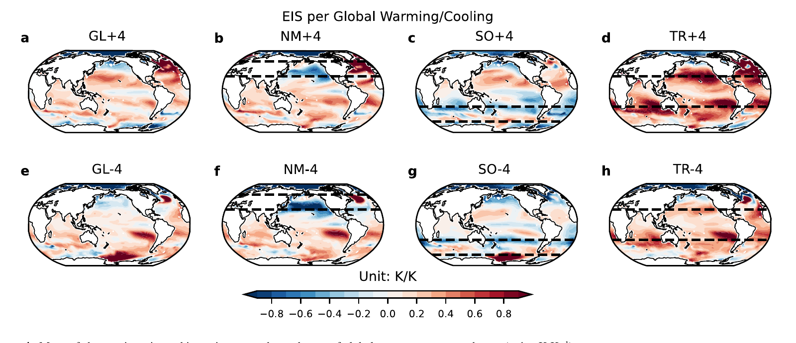
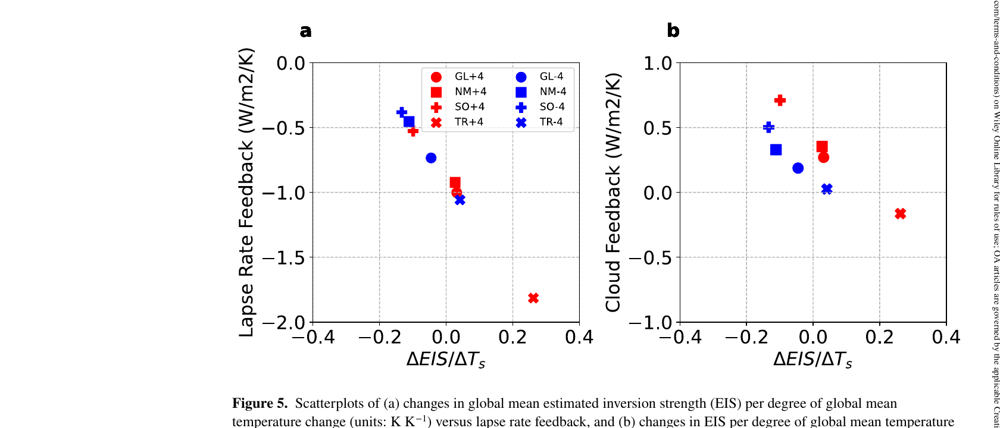

Latitude-Sensitive Response
Climate sensitivity depends strongly on where radiative forcing is imposed.
Forcing and Feedback • Radiative Feedbacks
Geophysical Research Letters (2023)
Coupled experiments show that climate sensitivity depends strongly on forcing latitude because regional forcing patterns reorganize clouds, inversion strength, and ocean heat uptake.

Latitude-Sensitive Response
Climate sensitivity depends strongly on where radiative forcing is imposed.
Feedback Structure Shift
Regional forcing patterns produce distinct global feedback and temperature responses.
Process-Level Constraint
Meridional forcing experiments clarify pathways behind sensitivity spread.
Paper Citation
Zhang, B., M. Zhao, H. He, B. J. Soden, Z. Tan, B. Xiang, and C. Wang, 2023: The Dependence of Climate Sensitivity on the Meridional Distribution of Radiative Forcing. Geophysical Research Letters, 50, e2023GL105492. https://doi.org/10.1029/2023GL105492
How does the meridional location of radiative forcing alter global temperature response and inferred climate sensitivity in a coupled atmosphere-ocean model?
From Zhang et al. (2023), https://doi.org/10.1029/2023GL105492.
Figure 1
Figure 2

Figure 3

Figure 4

Figure 5
